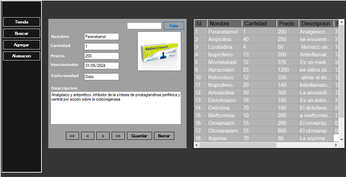
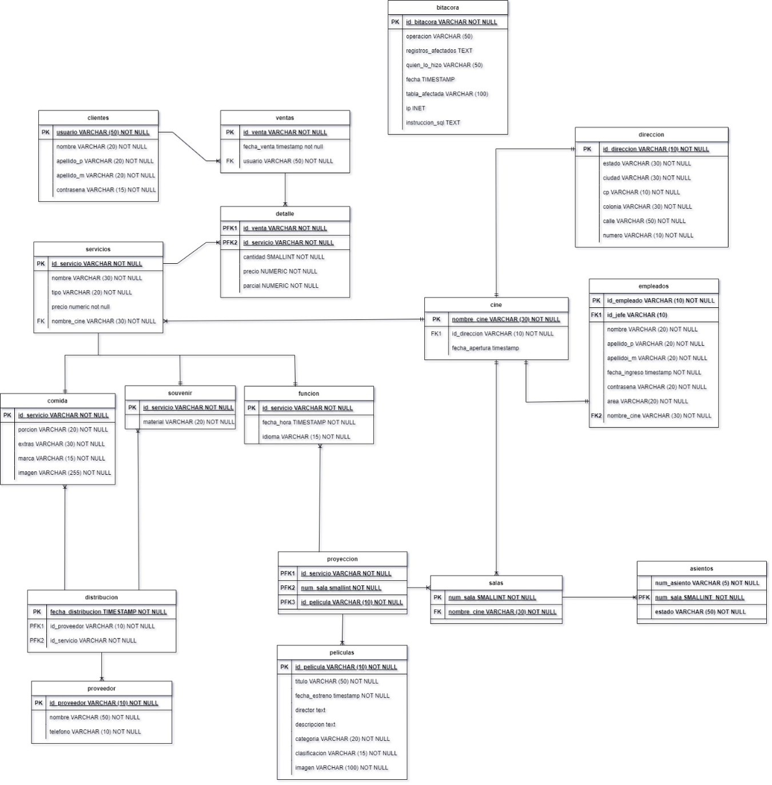
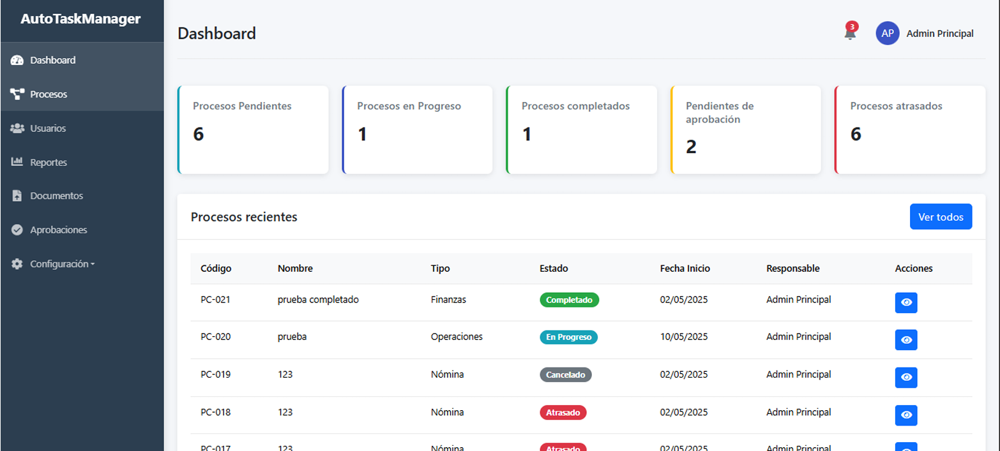
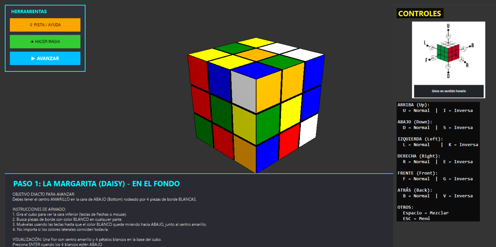
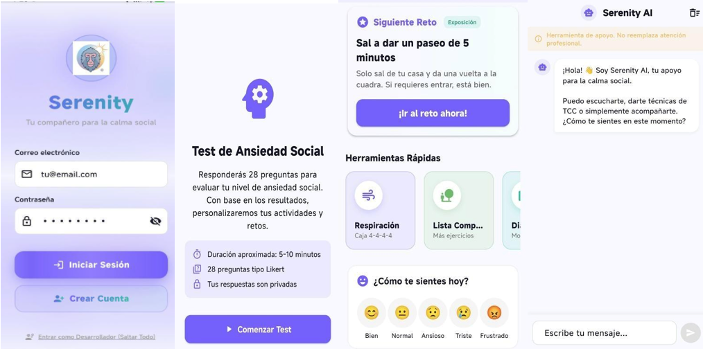
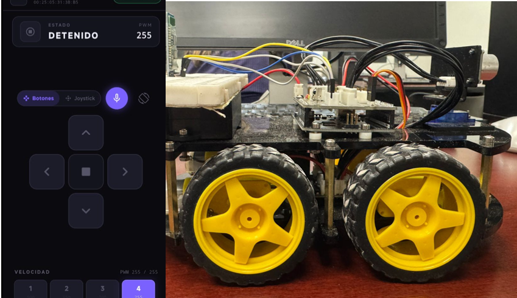
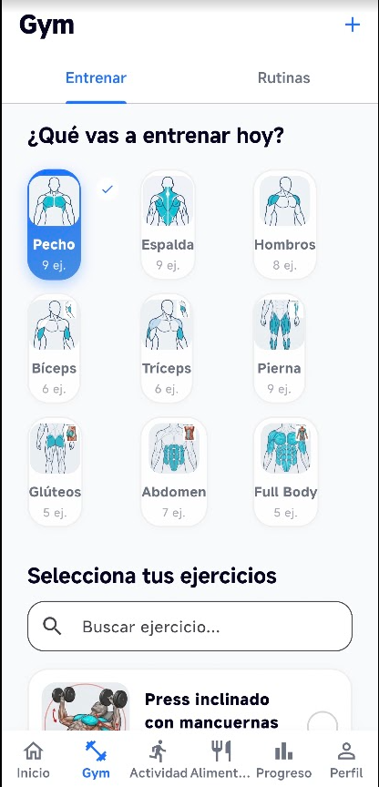
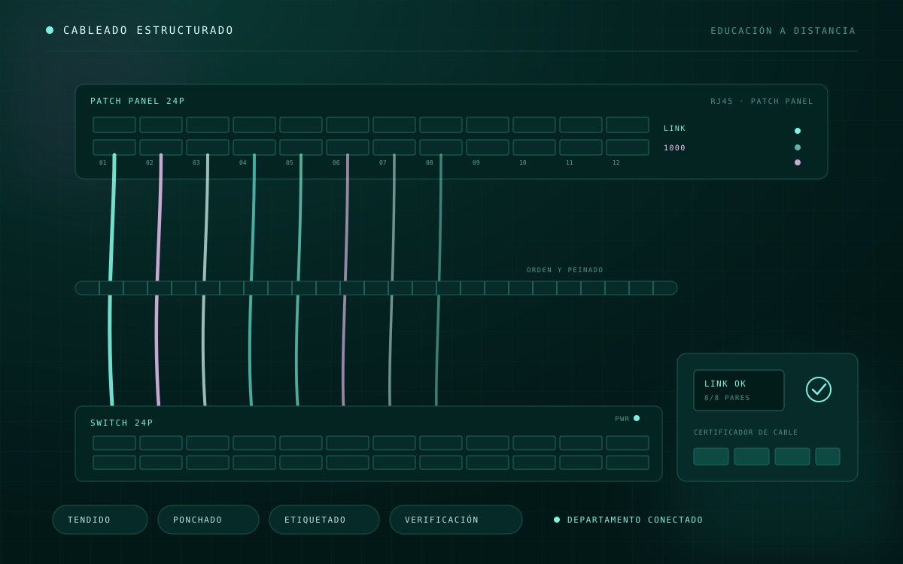
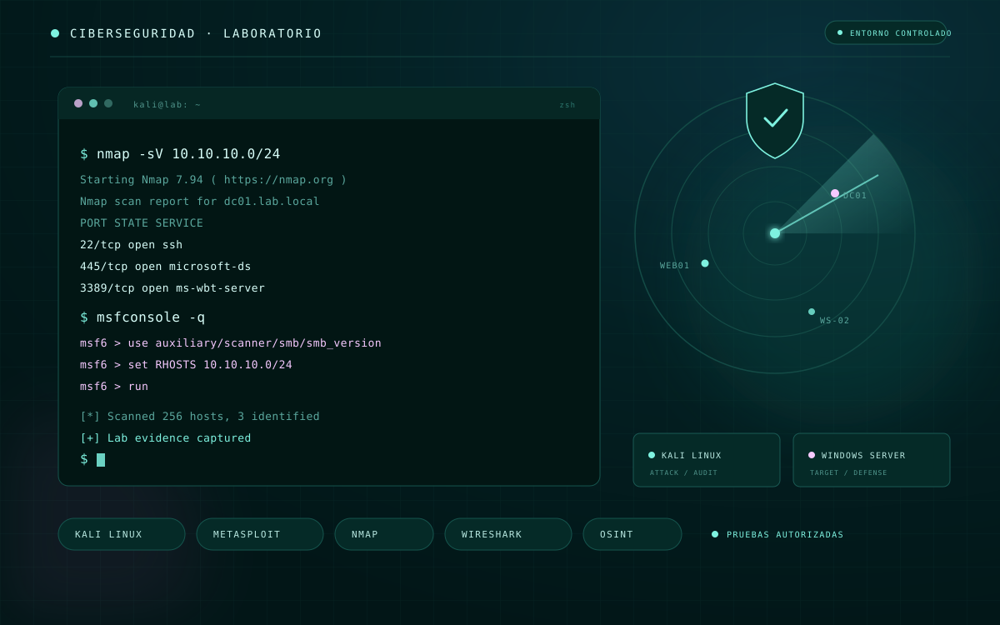
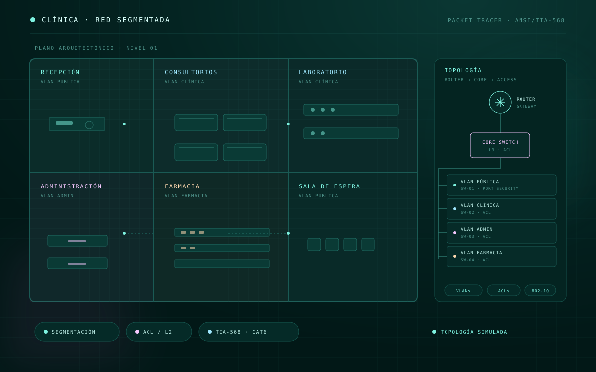

_
Carreon
Desarrollo aplicaciones web y de escritorio, diseño bases de datos y exploro ciberseguridad aplicada. Me interesa construir cosas que funcionen bien y seguir aprendiendo en el camino.
Estudiante de 9° semestre de Ingeniería en Sistemas Computacionales con conocimientos en desarrollo web, programación, bases de datos, redes e infraestructura. Manejo tecnologías como C#, HTML, CSS, JavaScript y SQL en PostgreSQL y SQL Server, además de herramientas de redes y ciberseguridad. Soy proactivo, responsable y con facilidad para trabajar en equipo. Me interesa seguir aprendiendo, mejorar mis habilidades técnicas y aportar soluciones a proyectos reales.
Lenguajes & frameworks
Bases de datos & herramientas
Seguridad & Redes
Sistemas & Office
Certificaciones
- CCNA: Introducción a las redes
- CCNA: Switching, Routing, Wireless Essentials
- CCNA: Enterprise Networking, Security, and Automation (en curso)
- Fundamentos de Ciberseguridad (Cisco Networking Academy)
- Hacking Ético (Cisco Networking Academy)
- Python Essentials 1
- JavaScript Essentials 1
Soporte técnico · Centro de Cómputo (Servicio Social)
Levantamiento y seguimiento de tickets de soporte técnico en toda la institución. Atención a usuarios, diagnóstico de problemas de hardware y software, mantenimiento preventivo y correctivo de equipos de cómputo.
Operador de producción · Flextronics
Operador de ensamble en línea de producción, asegurando calidad y eficiencia.
Capturista de datos · Datamark de México
Captura y verificación de datos con precisión, manejo de bases de datos internas.

Gestión de inventarios
Aplicación para administración de inventario en farmacia, con control de existencias y movimientos.

Base de datos para cine
Implementación y administración de BD en Ubuntu Server, con control de acceso e integridad de datos.

Automatización administrativa
Aplicación web para automatizar procesos administrativos y reducir trabajo manual.

Cubo de Rubik 3D
Aplicación interactiva en 3D que simula y resuelve el cubo de Rubik.

App para ansiedad social
Desarrollo de app móvil con funciones de inteligencia artificial para apoyo emocional.

Vehículo eléctrico con Arduino
Armado de hardware, conexión de componentes electrónicos y programación de Arduino para el control del vehículo.

FitTrack AI
Rutinas de gimnasio, calorías calculadas con IA y rastreo GPS en tiempo real.

Laboratorio de cómputo
Instalación y configuración de equipos para el laboratorio de Contaduría, con conexión y organización del cableado de red.

Cableado de red · Educación a Distancia
Instalación y organización del cableado de red para habilitar la conectividad de un nuevo departamento académico.

Laboratorios de ciberseguridad
Reconocimiento de redes, análisis de tráfico y pruebas de seguridad controladas con Kali Linux y Windows Server.

Red segmentada para clínica médica
Diseño de plano y simulación de red con VLANs, ACLs, seguridad de capa 2 y cableado estructurado.
Ing. Sistemas Computacionales
9° semestre · Instituto Tecnológico de Cd. Juárez
Técnico en Plásticos
Conalep Juárez 1